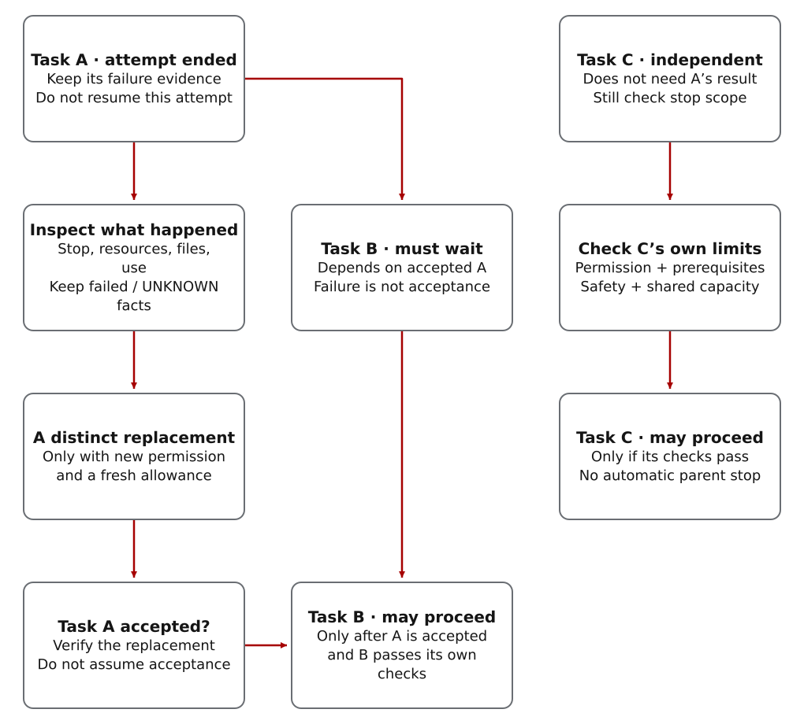

Confirm you can delegate this task
A native worker is another Codex agent assigned a specific task. Every native worker CWO delegates to must be supervised; there is no unsupervised opt-out. A small, explicitly authorized maintenance task can stay in the main thread. Use delegation when it helps the project, not merely to demonstrate another agent.
This page explains the steps; it does not approve a launch. The active policy and trusted host must establish the exact worker model, allowed tools, workspace, ownership, time and usage allowance for this attempt.
See the supervision overview: scope, monitoring, observed work, cleanup and acceptance.
Size the whole assignment before choosing the worker
The active task_selected_routing v3 policy selects gpt-5.6-luna first after model-neutral sizing. gpt-5.6-terra is escalation-only for documented fit, qualification, risk or economics reasons. Spark and GPT-5.5 v2 records are historical, not new dispatch authority.
For each attempt, verify that the observed model matches the requested model and that the assignment, source revision and allowance match the approved records. A CLI accepting a model name—or a probe showing tools—does not prove the worker can safely complete the task. Do not silently substitute an available model.
The normal single-worker path
You set the goal, allowed changes, spending and sharing boundaries. Ask the lead agent to prepare the assignment and report whether the exact worker route is available. The lead prepares and checks the execution records; you inspect the result and decide whether it meets your need. This overview is not a substitute for the exact execution contract.
- Record the required result, allowed changes and acceptance checks. Estimate preparation, execution, review, integration and validation before choosing a worker.
- Establish exact model/tool/host qualification and present ownership. Check enforced filesystem/network boundaries, not just an instruction to be read-only.
- Prepare a fresh attempt with four distinct records: a fit check without tool access (
precommit, not a Git commit), the scoped assignment (packet), approval for that exact assignment (operative release evidence) and a finite time/usage allowance. Passing the fit check alone does not approve execution. - Save the control state and register monitoring before sending the assignment. Use the host-approved launch procedure (
admitted transaction) so the supervisor can observe, interrupt and close the worker. Follow the exact execution contract. - Check the product behavior and which files actually changed. Confirm owned processes and resources are closed, evaluate the return, then record the lead’s acceptance decision.
A finished connection or a worker’s claim of success is not proof that the task passed. A request to revise the assignment (realignment) is not completion. A stopped attempt cannot be resumed; another attempt needs its own fresh allowance.
Optional concurrency is a preview
Concurrent work is limited to fixed groups of N=1..3 on a host that has proved the required capabilities. Each group needs approved assignments, isolated write ownership and enough shared capacity; a flag does not establish any of these. Keep Beads updates, journals, result combining, promotion and model dispatch serial as their contracts require.
Pool contracts, admission, interruption and cleanup preserve the details and historical evidence. Read-only work needs enforced read-only access. Do not treat a return as read-only when consistent evidence reports a mutation.
After a failure, determine which work must stop
After a failure, check whether the worker has stopped, who owns its resources, what allowance it consumed and which tasks depend on its result. A CONTAINED state label does not prove cleanup finished. Preserve failed and UNKNOWN observations. Continue unrelated, already-authorized work only if its own checks pass; dependent work waits for its prerequisite to be accepted.
Inspect the transaction and failure-accounting implementation; the recovery helper does not promise automatic replay of a terminal attempt.
Self-maintenance is a separate explicitly adopted objective. Its owner must grant the required in-process permissions and bound each operation. A saved authority record is not itself permission to execute. These maintenance controls are not required for ordinary first use.

Read the diagram as text
- The attempt on task A has ended and cannot be resumed. Preserve its failure evidence, including failed and UNKNOWN observations.
- Inspect actual process stop, resource ownership, changed files and consumed allowance. A CONTAINED status is not proof that these checks passed. Unresolved shared safety or capacity problems can still prevent other work.
- Task B depends on accepted A and must wait. A replacement of A is a distinct attempt: it needs new permission, a fresh allowance and verified acceptance. B may start only after A is accepted and B’s own checks pass.
- Task C does not depend on A’s result. It may continue only if its own permission, prerequisites, safety and shared capacity pass. A child failure does not by itself end all parent work.
Use older records to understand past runs—not to launch new ones
The source references retain Spark/v2 packets, fallback semantics and qualification records for interpretation and migration. Their present-tense historical command examples are not current instructions for new dispatch. The current overview and active v3 policy take precedence for selecting a fresh worker; they do not rewrite old evidence.
Current/historical source contract · Updates and migration · Return to the operator guide.